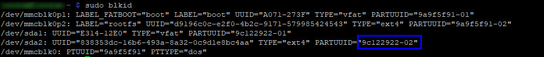
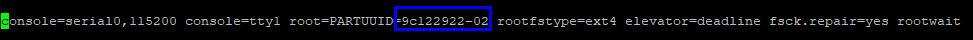
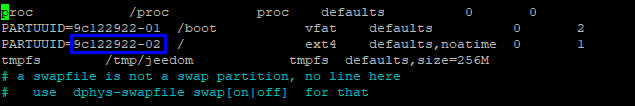
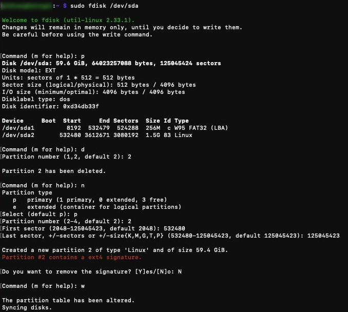
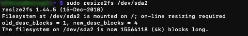
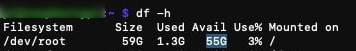

Well, Mr. Hunt, this is not Mission: Difficult, its Mission: Impossible. Difficult should be a walk in the park for you. - Boss, Mission: Impossible 2
Sometimes, a simple update is harder than you think. Since years, I've a Jeedom running on a Raspberry 3B+ and the last Jeedom update installed is the version 4.0.x hosted in a Debian 9 Stretch.
A few days ago I saw that the Jeedom 4.1.x was available with some really nice improvements.
The condition to be able to install this version is to have the Debian 10 Buster installed. As we can read in the install documentation, the best thing to do is to backup your Jeedom and install everything from scratch.
And that's what I did, downloaded the ISO x86, burned the SDCard, booted on it and installed Jeedom with the command line.
Right after that, I restored my Jeedom backup (I'll not describe that part here).
Now the fun part begins: Boot from the SSD.
When you check some websites, you'll read that you just need to install Debian on the SSD, plug it in the Raspberry and restart the device to boot from the SSD. But there are lies! (It was in my case)
The best thing I could find was to clone my SDCard to my SSD and it was really easy with the rpi-clone script.
rpi-clone is a shell script that is for cloning a running Raspberry Pi booted source disk (SD card or USB disk) to a destination disk which will be bootable. Destination disks are SD cards in the SD card slot or a USB card reader, USB flash disks, or USB hard drives.
First, clone the repository and copy the setup in your /usr/local/sbin directory:
git clone https://github.com/billw2/rpi-clone.git
cd rpi-clone
sudo cp rpi-clone rpi-clone-setup /usr/local/sbin
Stop the following services:
sudo service mysql stop
sudo service cron stop
sudo service apache2 stop
sudo service nginx stop
Connect your SSD to your Raspberry and clone your SDCard to your SSD:
rpi-clone sda -f
When it's done, you can restart the services:
sudo service mysql start
sudo service cron start
sudo service apache2 start
The next thing to do is to configure your Raspberry to be able to boot on the USB port. For that, you'll need to backup your current config.txt file, set the boot mode and then restart the Raspberry:
cp /boot/config.txt /boot/config.txt.old
echo program_usb_boot_mode=1 | sudo tee -a /boot/config.txt
sudo reboot
When your device restarted, you can check if the boot mode is set to boot on USB with the following command:
vcgencmd otp_dump | grep 17
>17:3020000a
If it returns 17:3020000a, the setting has been taken into account. Now we need to change the boot config to be able to boot on the SSD.
Get the PARTUUID from your SSD (/dev/sda2):
sudo blkid

Backup your current cmdline file:
sudo cp /boot/cmdline.txt /boot/cmdline.txt.bak
Edit the cmdline file and replace the PARTUUID with the value we copied from the sudo blkid command, save and quit:
sudo nano /boot/cmdline.txt

When it's done, you can reboot again:
sudo reboot
After the reboot, the following command should display the /dev/sda2 device:
findmnt -n -o SOURCE /
> /dev/sda2
Almost finished, now you need to change fstab to use the PARTUUID from your SSD device, save, quit and reboot again:
sudo nano /etc/fstab

sudo reboot
The next step is done to create a new partition on your SSD. As you'll see later, the partition size on your SSD is the same as your SDCard. Here we want to use the entire SSD disk size:

You'll need to reboot again when the partition is created. This time it may take a little longer.
It's not yet finished, now you need to resize the partition:

If everything went well, you should see the new partition size with the df command:
df -h

comments powered by Disqus